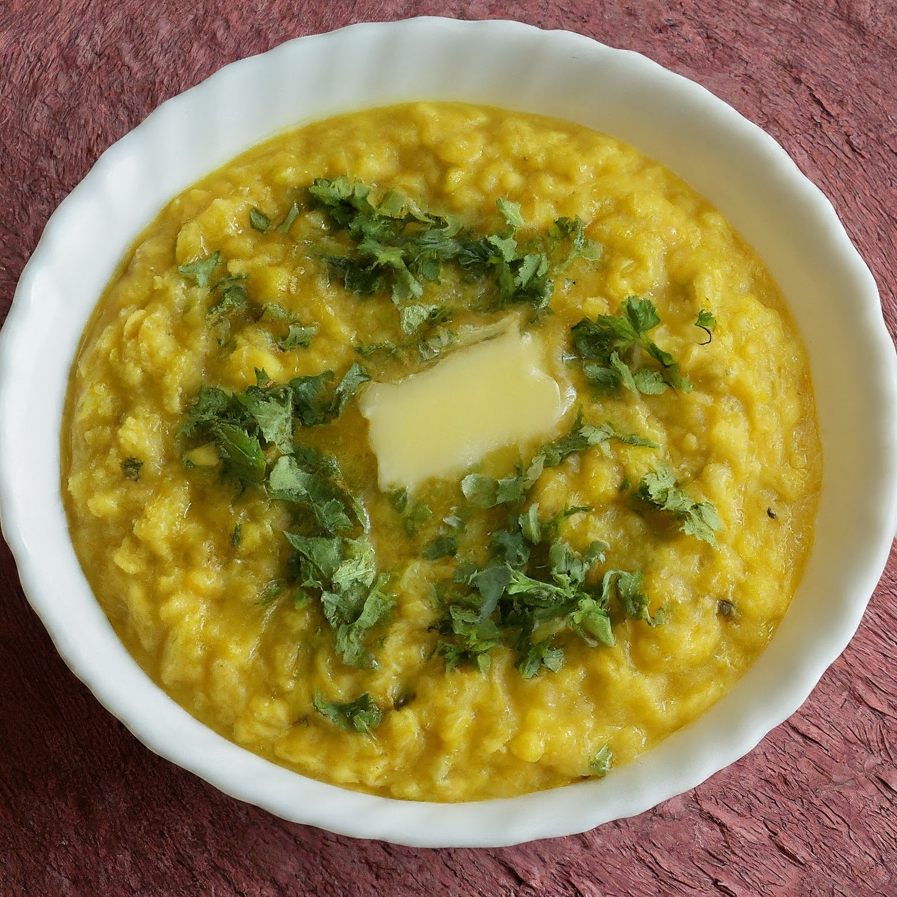

Delicious Moong Dal Khichdi
Ingredients:
- 1 cup moong dal (split yellow mung beans)
- 1 cup rice
- 1 tablespoon ghee or oil
- 1 teaspoon cumin seeds
- 1 teaspoon turmeric powder
- 1 small onion, finely chopped
- 1 small tomato, chopped
- Salt to taste
- 4 cups water
- Fresh coriander leaves for garnishing
Instructions:
1. Rinse the moong dal and rice together in water until the water runs clear. Soak them in water for about 15-20 minutes.
2. Heat ghee or oil in a pressure cooker or a deep pan.
3. Add cumin seeds and let them splutter.
4. Add finely chopped onions and sauté until they turn translucent.
5. Add chopped tomatoes and cook until they turn soft.
6. Drain the water from soaked moong dal and rice and add them to the cooker.
7. Add turmeric powder, salt, and water to the cooker. Mix well.
8. Close the lid of the pressure cooker and cook for about 3-4 whistles or if cooking in a pan, cover and cook until the dal and rice are completely cooked and mushy.
9. Once done, let the pressure release naturally. If the khichdi looks too thick, you can add more hot water to adjust the consistency.
10. Garnish with fresh coriander leaves.
11. Serve hot with a dollop of ghee, yogurt, pickle, or papad.
Enjoy your comforting and nutritious Moong Dal Khichdi! 🍲🌿